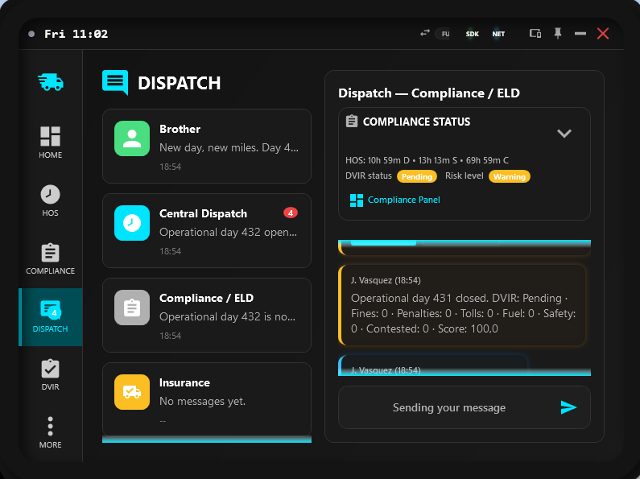
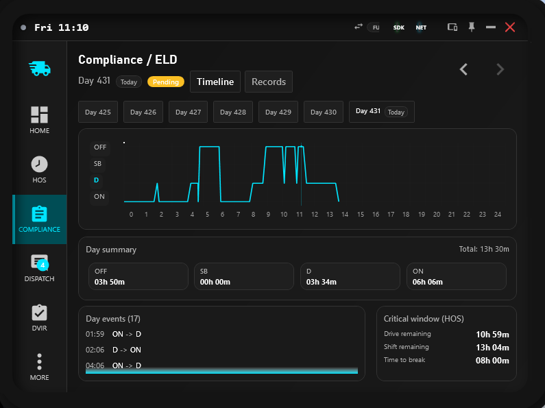
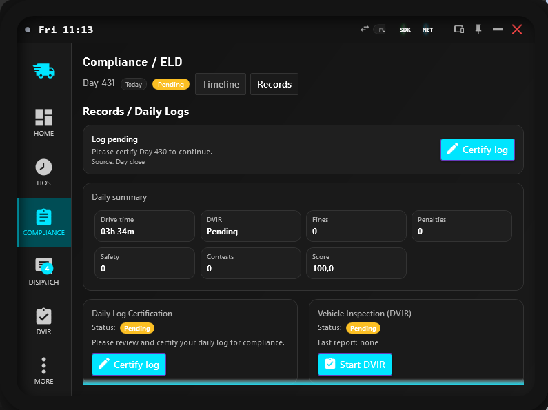
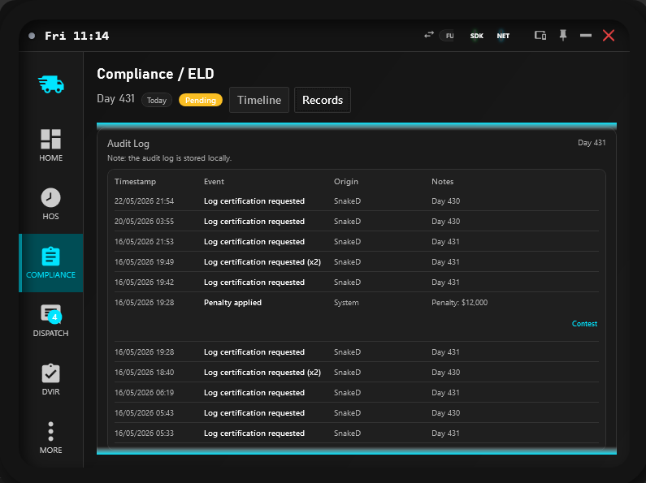

Compliance / ELD
Monitor risk, certify daily logs, and keep audit-ready records for HOS and DVIR operations.
Overview
This page explains how SimDuty Compliance works in daily operations and which actions are mandatory before continuing duty.
Use this guide to keep logs certifiable, prevent unresolved pending states, and preserve traceable records for support or audit review.
The workflow here is intentionally practical: what to check first, how to decide quickly, and when to open Timeline versus Records.
Certify pending daily logs before extended operation or pre-trip transitions
Track Drive, Shift, and Cycle remaining together with DVIR and risk indicators
Review records tab and audit events for day-level traceability
Use day timeline to identify status transitions and critical windows early
Use contest flow only with clear reason and evidence context
Open local audit file for deeper historical checks outside the UI
Operational quick path
- Start in Dispatch and read the
Compliance Statuscard before accepting route pressure. - If you see
Log pendingorDVIR Pending, openCompliance Panel > Recordsimmediately. - Certify the daily log first, then resolve DVIR requirements for the active unit and context.
- Open
Timelineand verify the critical window (Drive/Shift/Break) before resuming long driving segments. - Use Audit Log when a decision must be reviewed, contested, or shared with support.
Operational workflow
Pre-trip / mid-trip / post-trip framing:
- Pre-trip: clear pending certification and DVIR requirements before committing to route pressure.
- Mid-trip: monitor Timeline critical window and risk state, then correct deviations before escalation.
- Post-trip: validate records, certification status, and audit entries for day closure traceability.
- Open Dispatch and review the fixed
Compliance Statuscard before route decisions. - If any pending certification appears, open
Compliance Paneland certify the daily log first. - Use
Timelineto inspect day status transitions and remaining critical windows. - Use
Recordsto validate DVIR status, audit events, and certification history. - If a penalized event is incorrect, submit a contest with a short reason and track decision state.

Field guide
- Drive / Shift / Cycle remaining: these three values define immediate and extended legal room. Drive alone is never enough for route commitment.
- Risk level:
Normalis stable,Warningneeds planning, andCriticalrequires immediate corrective action before prolonged movement. - DVIR status:
OKmeans inspection continuity,Pendingmeans required action still open, andUnsafemeans operational risk remains unresolved. - Log status:
Pendingmeans daily certification is due;Certifiedmeans the current day record is acknowledged. - Timeline events: show status transitions and timing pattern; use these to understand behavior over the full day, not only current status.
- Audit events: formal history for requests, signatures, violations, and contest decisions with timestamp and origin.
Decision matrix
Use this matrix when status signals conflict and you need one clear next action.
State: Log pending + pre-trip context
- Interpretation: daily certification is open and can escalate into compliance friction.
- Action: open Records and run
Certify logbefore normal duty progression.
State: DVIR Pending + risk warning
- Interpretation: safety and inspection continuity are both unstable.
- Action: complete the required DVIR context, then re-check critical window in Timeline.
State: contested event under review
- Interpretation: event remains tracked but decision is pending.
- Action: continue operation, monitor decision status in Audit Log, and verify score/finance updates after resolution.
State: timeline looks clean but risk still elevated
- Interpretation: a non-timeline factor (DVIR, unresolved request, or recent event) may still drive risk.
- Action: inspect Records and latest audit entries before assuming compliance is fully restored.
Compliance status card
In Dispatch, the card summarizes immediate compliance posture without opening the full panel.
- Vehicle: unit model and plate context.
- HOS compact: Drive, Shift, and Cycle remaining in one line.
- DVIR status: typically
OK,Pending, orUnsafe. - Risk level:
Normal,Warning, orCritical. - History: last extension and last DVIR report summary.
- Action:
Compliance Panelopens detailed timeline and records tabs.
Compliance panel
Tab 1: Timeline
- Day selector strip with current day highlight.
- Timeline graph for OFF/SB/D/ON transitions through the selected operational day.
- Day summary chips and total duration for each main status.
- Critical window block: Drive remaining, Shift remaining, and Time to break.
- Day events list with timestamp and transition labels.

Tab 2: Records
- Daily log certification card with status and certify action.
- DVIR summary card with last report and start-DVIR action.
- Audit log list showing timestamp, event, origin, and notes.
- Open-audit-file action to view local stored records.
Records and audit
Records is the control center for closing pending requirements and validating what happened in the operational day.
- Daily certification may be requested at day close, post-trip contexts, or pre-trip checks.
- When pending, a clear status message is shown and certification should be completed as soon as safe.
- Audit events can include log requests/signatures, HOS extension lifecycle, DVIR events, and finance-related compliance events.
- Use day filtering to keep review scoped and easier to validate.


Pre-trip routine:
- Confirm no pending log certification.
- Confirm DVIR state for active truck/trailer context.
- Check critical window and route feasibility in Timeline.
Post-trip routine:
- Review day summary and compliance badge state.
- Certify the daily log when requested.
- Validate that expected audit entries were written.
Contests and decisions
Contests are available for events such as fines, tolls, penalties, safety items, and DVIR-related entries.
- Submit contest with category-appropriate reason (or write-in when needed) and keep the note concise and factual.
- Event enters
Under reviewstatus and remains visible in audit context. - Decision can become
ApprovedorDenied. - Approved decisions can trigger score-impact removal and financial refund lifecycle when applicable.
- Denied decisions preserve the original event impact in records.
Path and reference
Main paths:
Dispatch > Compliance StatuscardCompliance Panel > TimelineCompliance Panel > RecordsRecords > Certify logRecords > Open audit log
Validation checkpoint
- No unresolved daily log pending warning for active day operation.
- Timeline and day events reflect expected status transitions.
- DVIR summary in records matches current operational inspection state.
- Audit entries include recent compliance actions with coherent origin/notes.
- Any contested event shows explicit and current decision status.
Quick support
Apply checks in order and confirm each fix before moving to the next symptom block.
Symptom: daily log remains pending.
- Check: open Records and confirm current day certification card state.
- Fix: use
Certify log, then re-open panel and verify status refresh.
Symptom: risk level stays high after rest or DVIR actions.
- Check: timeline critical window + unresolved DVIR pending states.
- Fix: complete missing DVIR context and re-validate Drive/Shift/Cycle envelope.
Symptom: log was certified but panel still shows stale pending state.
- Check: selected day in Records and whether the request refers to previous day context.
- Fix: switch day, reopen Records, and confirm latest certification event appears in Audit Log.
Symptom: event cannot be contested.
- Check: whether the selected event type supports contest flow and if an existing decision is already final.
- Fix: pick a contest-eligible event and submit a short reason; monitor decision status in records.
Symptom: cannot find expected event in panel.
- Check: selected day context and Records tab filter scope.
- Fix: switch day and use
Open audit logfor full local history review.
FAQ
- Do I need to certify logs every day? Yes. Daily certification is part of normal compliance cycle and should be completed whenever requested.
- Can I keep driving with a pending certification? You may continue briefly in some contexts, but pending logs should be resolved immediately to avoid escalations and pre-trip restrictions.
- What is the difference between Timeline events and Audit Log? Timeline events explain duty-status transitions across the day; Audit Log records compliance actions and decisions with origin and notes.
- When does pending become operationally critical? Pending is critical when tied to pre-trip certification, unresolved DVIR context, or a warning/critical risk state that reduces safe decision margin.
- Where can I see what changed during the day? Use Timeline day events for transitions and Records audit log for event-by-event traceability.
- What happens if a contest is approved? The event is updated with decision status and related score/financial impact can be adjusted according to policy.